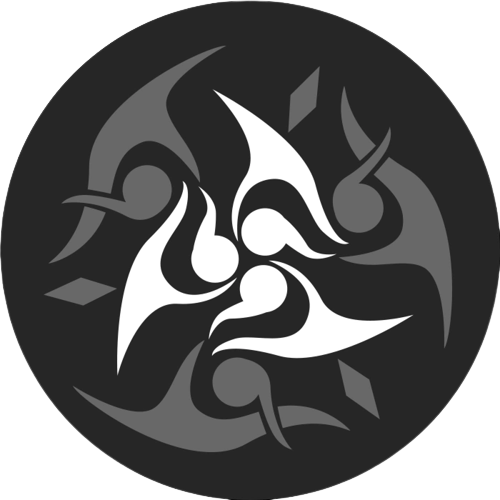
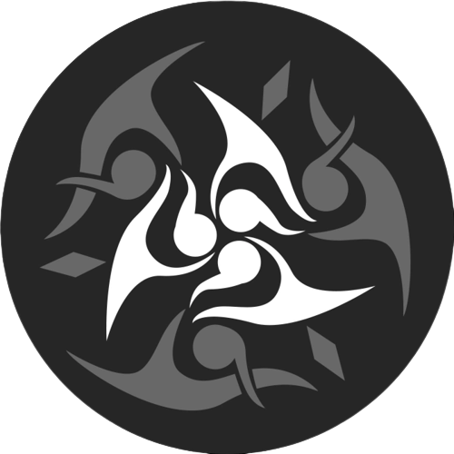

Xipe
- The Harmony
 

“The world is in harmony and the stars shine bright. Praise the Lord! All are connected and the wind of blessing breathes across the lands!”
- Odes of Harmony, /
A plural Aeon from multiple harmonious worlds. The glorious Xipe of thousand faces is chanting songs of
joy and happiness.
To battle the brutality of the laws of the universe, intelligent lifeforms must discard their cowardly
selfishness and the differences between individuals, fusing into one singular melody to have the strong
help the weak, and to protect life with death.
The Family
- Harmony
“The world is in harmony and the stars shine bright. Praise the Lord’s boundless virtue! All humans are
brethren and all things are connected. The winds of blessing sweep across the lands!”
- Odes of Harmony, VII
In the vision of the Harmony, glamorous civilizations in the universe will finally become brothers and
sisters, singing a hymn of unity and enjoying harmony. The whole universe will become a peaceful
entity, with no discordant disagreements nor fools who worries about a short-sighted future.
Under the doting light of the Aeon Xipe, the chosen few formed the harmonious Family. They came from
different worlds and civilizations, possessing different identities, but became a tight family. There are no
conflicts or disputes among its members, only eternal love and joy. It is a loving family found nowhere
else in the universe.
The Family calls out to other worlds with their song, encouraging them to embrace the Harmony.
Whenever new worlds accept the blessing of Xipe, the Family will celebrate and rejoice and work even
harder at praising the Aeon’s kindness. But not every blessed world can become a member of the Family
– Few would mention the civilizations that perished out of stupidity or hubris. People are also curious
whether any members of the Family had grown tired of the song and voluntarily abandoned the Path of
Harmony? In the face of such a question, the Family smiles and replies, “Never.”